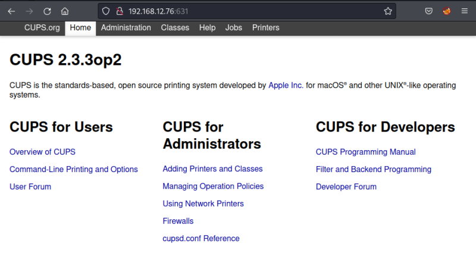
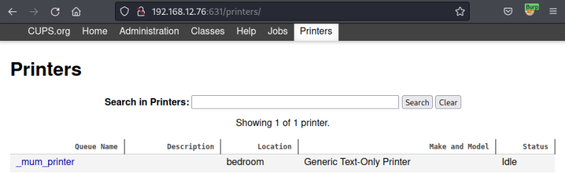
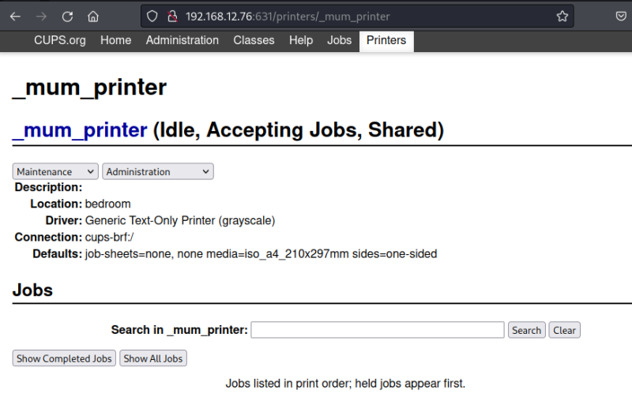
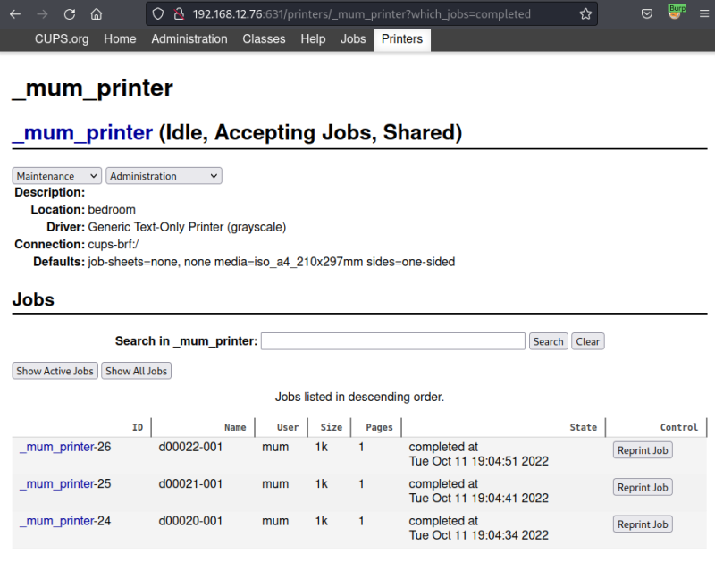
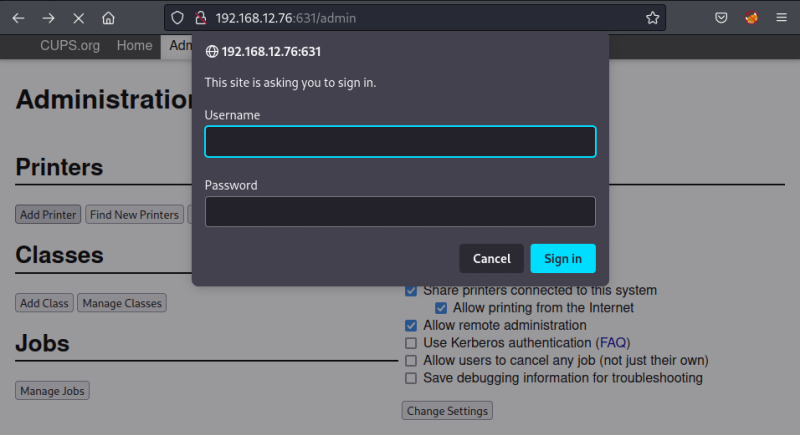

3. Enumerate
1. Visit http://192.168.12.76:631.

There's a printing system.
2. Go to “Printers”.

There's a “_mum_printer”.
3. Click on the “_mum_printer” link.

4. Click on the “Show completed jobs”.

You can see the user is “mum”.
3. Go to “Administration” and click on the “Add printer” button.

“mum” is the Username, but you don't have the password.